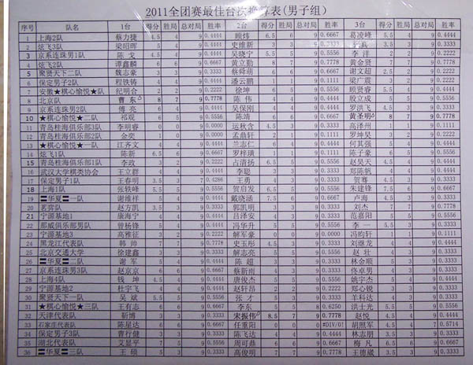

2011全团男子组最佳台次换算表
首页
五子棋新闻
#1 2011全团男子组最佳台次换算表 作者：被感动的人 发表时间：2011-5-2 12:38:30

最佳一台 北京队 曹冬 8分
最佳二台 天津队 宋振伟 8.5分 ！
最佳三台 棋心愉悦2队 黄圣明 8分
期待等级分结果

［此帖子已被 被感动的人 在 2011-5-2 12:52:52 编辑过］
［此帖子已被 被感动的人 在 2011-5-2 12:55:04 编辑过］
#2 Re:2011全团男子组最佳台次换算表 作者：掌棋宣传员 发表时间：2011-5-2 12:48:47
 最佳2台的棋手9轮比赛赢了7局?...8.5分?是不是算错了?
最佳2台的棋手9轮比赛赢了7局?...8.5分?是不是算错了?
#3 Re:2011全团男子组最佳台次换算表 作者：雨一直下 发表时间：2011-5-2 13:16:47
。。。。。。有裁判解释么？
#4 Re:2011全团男子组最佳台次换算表 作者：无尽 发表时间：2011-5-2 13:18:30
。。
［此帖子已被 无尽 在 2011-5-2 13:43:32 编辑过］
#5 Re:2011全团男子组最佳台次换算表 作者：水月 发表时间：2011-5-2 13:21:33
后面一张图错了 file:///C:/DOCUME~1/ADMINI~1/LOCALS~1/Temp/V7(XMWRN]%7BG8~CI%7DBCCR3QC.gif
#6 Re:2011全团男子组最佳台次换算表 作者：被感动的人 发表时间：2011-5-2 13:26:52
水月上图~~
#7 Re:2011全团男子组最佳台次换算表 作者：None 发表时间：2011-5-2 13:42:32
天津最佳2台其实是8胜，但是有个2台因为弃权，所以不算胜局，但是有0.5的得分。已经证实了，没有错 ［ 被感动的人 于 2011-5-2 13:54:12 时花20金币送鲜花一朵］
#8 Re:2011全团男子组最佳台次换算表 作者：无尽 发表时间：2011-5-2 13:42:38
原来如此
［此帖子已被 无尽 在 2011-5-2 13:43:12 编辑过］
#9 Re:2011全团男子组最佳台次换算表 作者：雪飞 发表时间：2011-5-2 13:48:35
搜到的解释，不知道五子棋比赛是否也是如此处理：
根据《国际棋联比赛规则》对“未弈局”的处理，胜局数（赢棋数）不包括轮空、对手退出比赛、对手缺席等未对弈而获得的得分。
#10 Re:2011全团男子组最佳台次换算表 作者：屏蔽 发表时间：2011-5-2 21:16:01
是这样的。
#11 Re:2011全团男子组最佳台次换算表 作者：我是裁判 发表时间：2011-5-2 22:39:27
最佳台次计算时胜局的计算不考虑以下对局：和局、轮空、对手弃权、与以上类似的特殊情况。
#12 Re:2011全团男子组最佳台次换算表 作者：松痕 发表时间：2011-5-2 22:45:44
从得分看，屏蔽棋风在转型中。。
#13 Re:2011全团男子组最佳台次换算表 作者：屏蔽 发表时间：2011-5-2 23:48:27
三胜五和啥的我也郁闷啊……